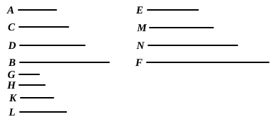
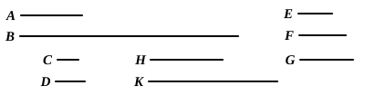
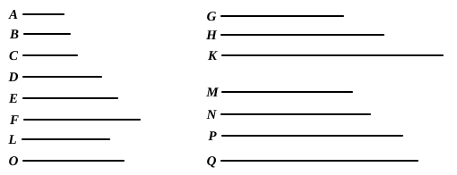
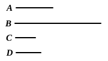
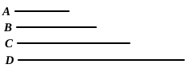
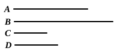

BOOK VIII. PROPOSITIONS.¶

If between two numbers there fall numbers in continued proportion with them, then, however many numbers fall between them in continued proportion, so many will also fall in continued proportion between the numbers which have the same ratio with the original numbers.

Between two cube numbers there are two mean proportional numbers, and the cube has to the cube the ratio triplicate of that which the side has to the side.

If there be as many numbers as we please in continued proportion, and each by multiplying itself make some number, the products will be proportional; and, if the original numbers by multiplying the products make certain numbers, the latter will also be proportional.

If a square number do not measure a square number, neither will the side measure the side; and, if the side do not measure the side, neither will the square measure the square.

If four numbers be in continued proportion, and the first be cube, the fourth will also be cube.

If two numbers have to one another the ratio which a square number has to a square number, and the first be square, the second will also be square.